为什么有32个关卡的超级马里奥兄弟只要64KB？
2020年04月17日 19:00:00
来源：果壳网
差评君前两天逛知乎的时候看到一个问题：为什么魂斗罗只有 128 KB 却可以实现那么长的剧情？
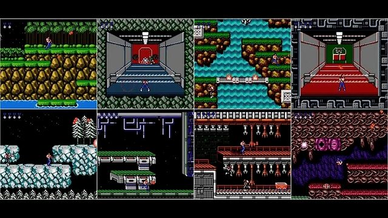其实以现在的标准来看，1987 年发布的《 魂斗罗 》剧情并不是很长，一共也就 8 个场景线性布置关卡，我拿出一晚上花在动森上的时间没准就能通关。。。
但魂斗罗的 8 个关卡在当时看来也算得上是精心制作了，可它真的只有 128 KB 。
128 KB 是什么概念？这篇花几分钟就能看完的文章所需的流量，都是它的 10 倍以上。
而在 90 年代前后，游戏开发人员可以用这 128 KB 让人快乐一整晚，这是咋做到的呢？
巧了。。。差评君自己是个游戏狂 + 开发者，而且每年都会参加 48 小时极限游戏开发活动。
因此这种关于游戏开发的小问题，俺还真插得上话。。。所以今天来和大家聊聊以前那些能玩挺久的老游戏是咋做得这么小的。
和现在动辄几十 G 的单机游戏相比，由于早些年电子产品技术落后，家用机磁盘空间、显存以及内存捉襟见肘，开发一个效果不错的游戏就像是在电线杆上跳舞。
因此，和现在的游戏开发者们相比，当时人们在
空间利用率上可谓是登峰造极。
一般认知来说，游戏 = 艺术 + 技术。从技术角度上来看，“艺术” 通过素材展现，“技术”通过代码实现。
翻译成人话，古早的 2D 游戏由贴图 + 代码 + 音效组成。
代码其实一点都不占地儿，说白了就是一堆英文 + 数字 + 标点符号的文本文件。
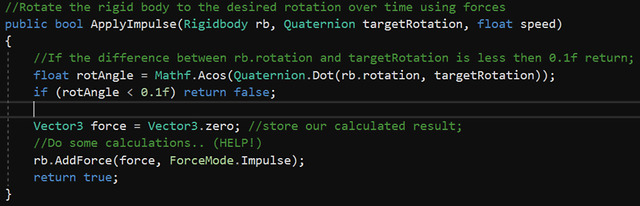差评君打开记事本，用脸滚键盘瞎敲 1000 个英文数字保存起来，这个 txt 文件也就 4KB 。
与之相比，
贴图和音效这些美术素材是当时开发者要头疼的玩意儿。
先说说贴图吧，在计算机里任何东西本质上都是一堆信息，一张图要包含每个像素的颜色信息 + 像素所在的位置信息。
比如说我前一张拿来说明 1000 个字符占地 4KB 大小的示意图，它本身其实占用了 44 KB 。
虽然 FC 时代的主流游戏素材存储格式上和现在有所差别，但大致是这么个意思。
那张 44 KB 的图尺寸是 788 * 388，而 FC 经典游戏《 超级马里奥兄弟 》第一关地图所有场景尺寸加起来起码得是那张图尺寸的 N 倍。
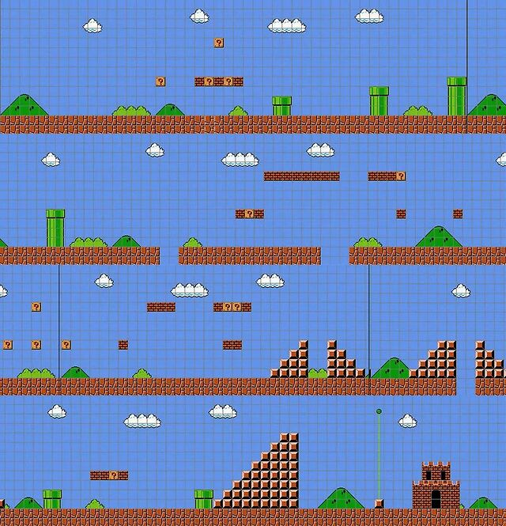而且它还有 8 个场景，每个场景又有 4 小关。
可《 超级马里奥兄弟 》的大小只有 64 KB，比魂斗罗还小。
这时候得介绍个方法：
Tile Map
。
这是个类似调色板的东西，游戏开发者把游戏里会出现的素材提前准备好，然后运行游戏的时候把素材拼接起来就行，这一个个素材叫 Tile ，整个素材包叫做 Tile Map 。
这样一来，上面展示的那长长的第一关场景就不用提前搭建好再存储了，而是你在玩的时候重复利用提前准备好的东西。
FC 版本的《 超级马里奥兄弟 》看似有这么多关卡，其实出现过的东西就这么多。
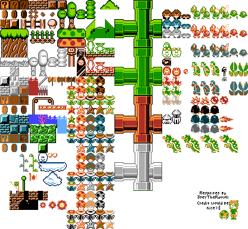其实这一点只要大家仔细观察就能发现，当时的老游戏重复素材特别多，例如一开始提到的《 魂斗罗 》也不例外。
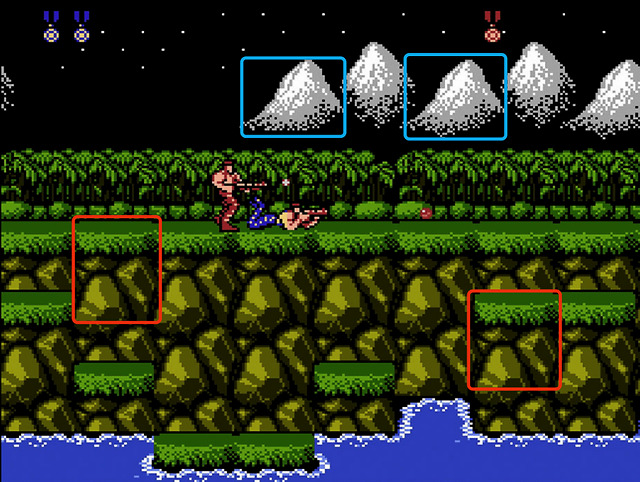在红白机时代的游戏，只要素材读取好了，运行的时候用代码告诉计算机这块素材应该出现在哪个位置就行了。。。代码占地儿小啊，写起来不心疼！
也就是说，你小时候在电视里浴血奋战的地方其实是 “赶工”赶出来的，只不过这个赶工运算量并不大，当时游戏帧率要求也不高，所以完全不影响体验。
差评君甚至见过一个极端例子：整关的 Tile 加起来才 10 个，然后剩下的都是代码。。。
然而，用重复素材搭场景还是不能满足贪心的老开发者，他们还有些骚操作。
咱们再看看这张熟悉得不能再熟悉的场景吧。
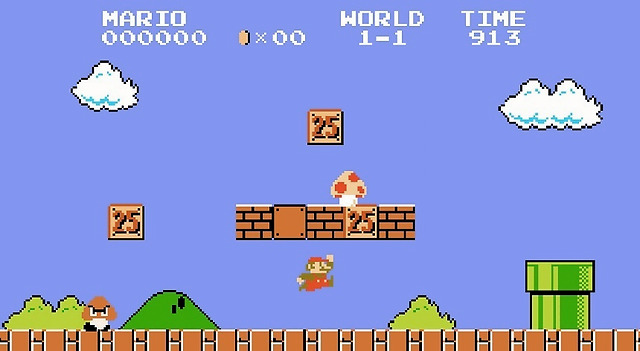这个场景里的云朵和草垛其实是一个玩意儿，差评君当年刚听说这个冷知识的时候，感觉童年被敲碎了。。。你不信再仔细瞅瞅形状和纹理，它俩除了颜色一模一样。
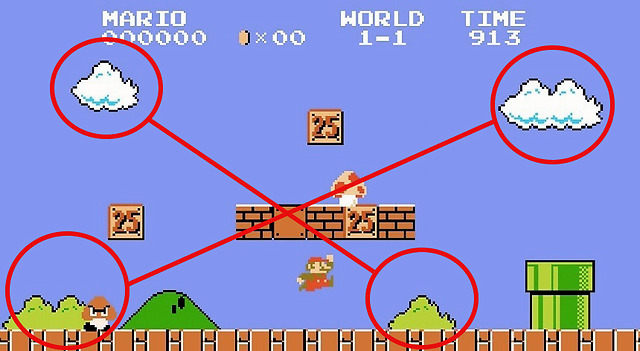如此一来只需要在生成草垛的时候借云朵过来，加一个颜色的信息，就行了。
这让我想起大学时代月底零花钱濒临透支时，只买一个菜然后问阿姨多打点汤汁浇在饭上的感觉一样，人在资源缺少的时候能做到多抠，你永远想像不到。
这个手法其实也挺常见。。。魂斗罗双人模式下的奖牌，两个兄贵的模型，也是这么干的。
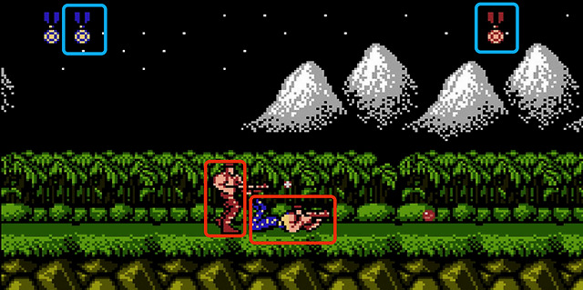一个游戏除了画面，还要有音效，声色俱佳才能成为经典，但音效这种多媒体素材也是个占地方的玩意儿。
去任天堂官方网站下载了《 超级马里奥兄弟 》用 MP3 格式存储的背景音乐，短短 1 分 21 秒你猜猜占地多少？
3.13 MB 。。。而 FC 版本整个游戏的大小前面也说了 —— 64 KB 。
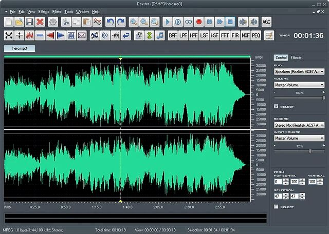其实在 FC 时代的游戏里，音效存储和现在很不一样。
现在的主流音乐格式其实是音频文件，这类文件里存储的信息要描述整个声音的构成。
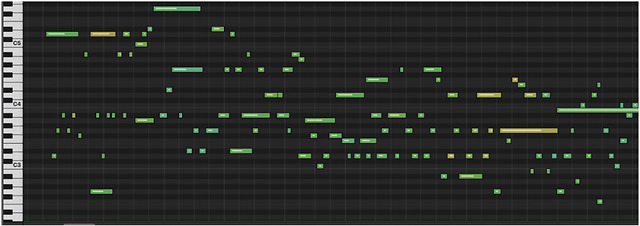但在 FC 时代，游戏音效的处理思路可以参考 MIDI 文件，只存储排列好的音符当中的音色、频率和音高等。
这两类文件，哪个信息量大，一看就明白了吧。
说白了，用类似 MIDI 文件存储的是一本乐谱，而音频存储的是整个演奏出来的音乐。
现在咱们对几 M 的空间一点都不心疼，所以就直接存下整个音频了。但在当时。。。想想差评君那个食堂里打饭的例子吧。
那么问题来了，只存储乐谱确实省下很多空间，但得有人演奏才能出声啊。
因此老游戏机里往往会用一块专用的音乐合成芯片，专门用来处理这些 “乐谱”，实时合成音乐。
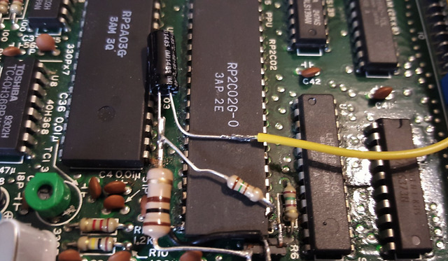只不过这些芯片能合成的音色种类有限，往往听上去都大同小异，但也颇有风味，被称作 Chiptune —— 芯片音乐或者是 8-bit 音乐，现在还有些音乐人在玩儿这个风格。
除了小格式 + 专用芯片，FC 时代的老游戏音乐往往不长，就是几个旋律来回循环，这么一来游戏音效占地也就不大了。
再加上当时没有游戏引擎的概念，代码直接用硬件跑，这又省了很多不必要的文件。
于是，我们看到了一个仅仅占用 128 KB 却包含 8 个关卡的《 魂斗罗 》，或者是占用 64 KB 却包含 32 个关卡的 《 超级马里奥兄弟 》。
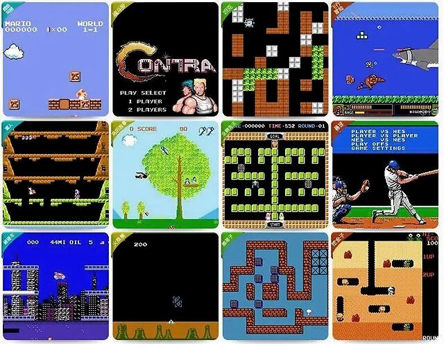在当年的极限开发环境下，一个游戏程序员不光要知道怎么实现功能，还要知道怎么省资源，想骚点子压缩素材。。。放现在的游戏公司里，那些人个个都是特种兵。
存储和传输技术都比较落后导致的这一情况，其实持续得挺久。
哪怕 2000 年之后开发者已经能稍微放开手动作大一点了，人们对空间大小依旧很敏感：游戏下载要吃网速，安装要占硬盘。
在网络游戏时代，差评君还听说过有产品经理因为安装包太大会考虑砍功能的坊间传说，就怕用户嫌下载时间久，不尝试了。
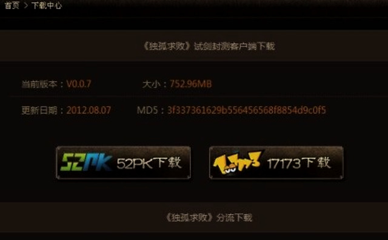不知道各位还记不记得，小时候和同学在课间讨论游戏时，假设有人吃下了某人的推荐，一定会问一句：这游戏多大？
随着网络基础建设突飞猛进导致网速变快，存储技术提升导致存储成本下降，开发环境没那么极限了，人们没这么敏感了，「 这游戏多大 」这句话也很少听到了。
回到当时音频和 MIDI 的例子，现在存下大音频文件花的成本，可能比加一块音乐合成芯片低很多。
放开了手脚的游戏业界，把 3D 游戏做出了新高度，用大量逼真建模和素材堆出极度真实画面的同时。。。
在占用空间上也开始放飞自我：在 2011 年 id Software 发售了一款游戏《 狂怒 》，需要占用 25G 硬盘空间，这大胆动作在当时被各大玩家论坛吐槽，但也就这么卖了出去。
2018 年 R 星发售的 《 荒野大镖客：救赎2 》占用了 100 多 G，差评君买的 PS4 版本到手是两张蓝光碟的罕见情况，周围尽管有吐槽，但似乎没有 7 年前吐槽 《 狂怒 》那么狠。
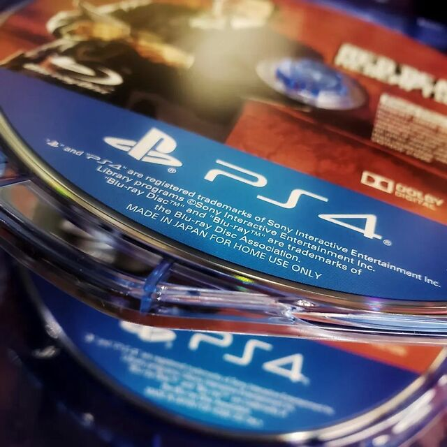技术发展，对一切事物的改变是很大的：当时的人们理所当然为了几十 KB 绞尽脑汁做优化，现在的我们理所当然觉得一个 3A 大作占用几十个 G 非常合理，这两者差了好几个数量级。
科技发展改变的不光是我们的生活，也能极大改变我们的认知。